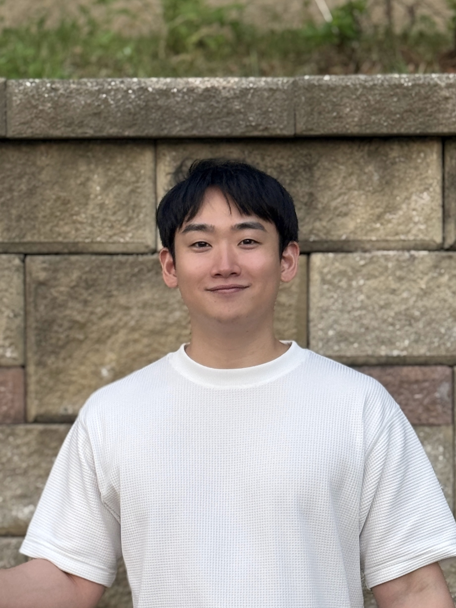
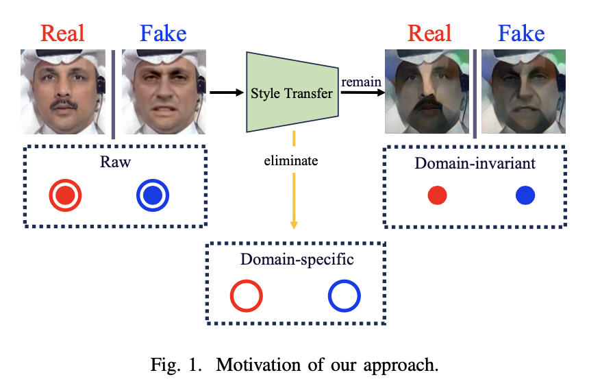
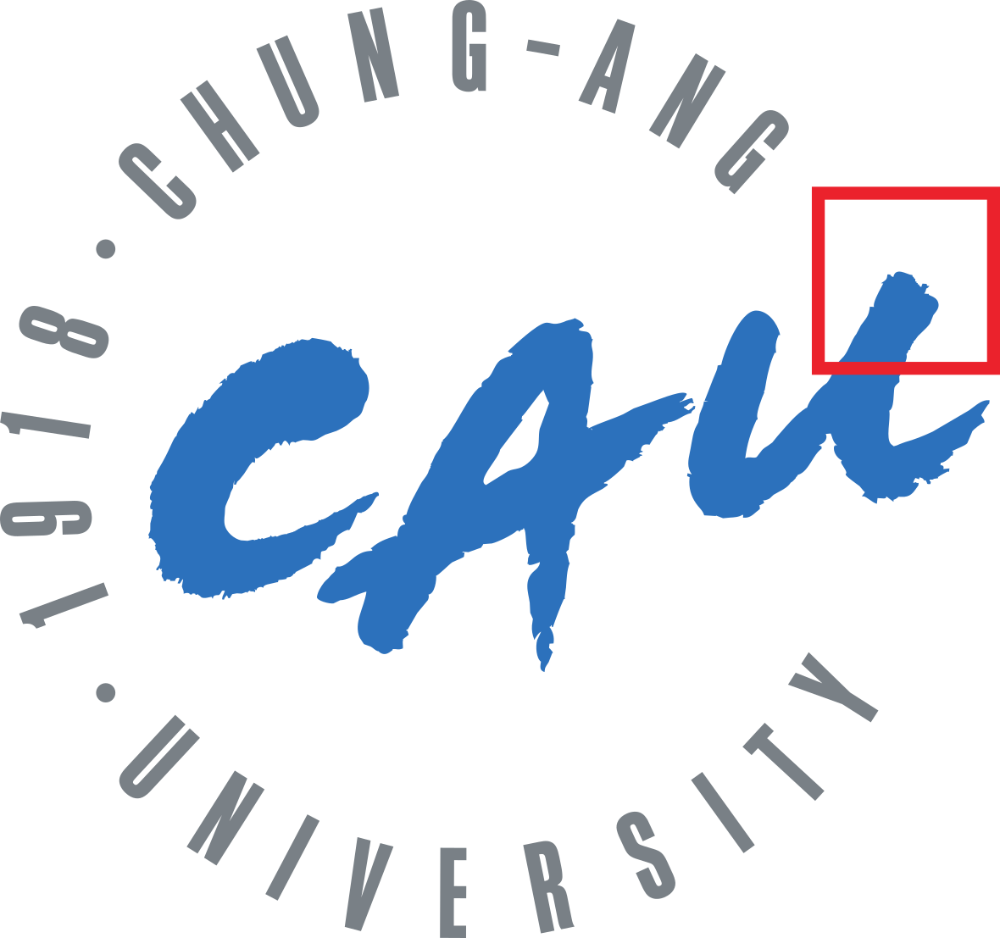
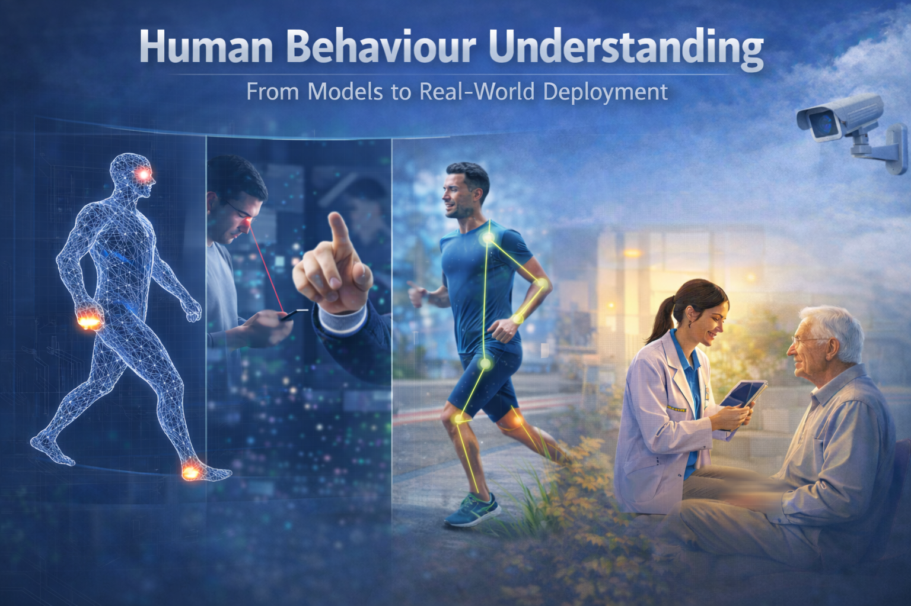

|
\ Hyun Jin Cho \ \\ I am currently a PhD student in Computer Science at the \University of Birmingham\, advised by Prof. \Hyung Jin Chang\ and Prof. \Aleš Leonardis\. I received my M.S. in Advanced Imaging Science from Chung-Ang University in 2025, advised by Prof. \Jongwon Choi\. My PhD research will focus on inclusive 3D human understanding for XR and assistive interaction. In this direction, I will also contribute to a Google-funded project, "Improving Accessibility and Equitability in Human Understanding for XR," supported by a \Google Unrestricted Research Gift\ awarded to our research group. \ \\Blog\ / \LinkedIn\ / \Google Scholar\ / \GitHub\ / \Time\ / \ \ |
\
\
\
\ \ |
\
\PUBLICATIONS\\I'm interested in computer vision, deep learning, 3D human understanding, and human-centred AI. Most of my research is about recovering and modelling humans in 3D (shape, pose, motion, etc) from images, with applications in XR and assistive interaction. \ \ |
\
\ \
\ |
\
\
\Reference-Based Microscopic Defect Detection in High Resolution Printed Media Using Learnable Frequency Decomposition\
\
\ Wonwoo No, \Hyunjin Cho\, Hong-In Won, Hyunchul Tae \ \IEEE Access\, vol. 14, pp. 100496–100507, 2026 \ \Work done at KITECH\ \ \ \paper\ / \DOI\ / \bibtex\ \ |
\
\ \
\
\
\ |
\
\
\AJAHR: Amputated Joint Aware 3D Human Mesh Recovery\
\
\ \Hyunjin Cho\\*, Giyun Choi\*, \Jongwon Choi\ \ \ICCV\, 2025 (\* Equal Contribution) \ \ \project page\ / \arXiv\ / \supplement\ / \bibtex\ \ |
\
|
\  \ |
\
\
\Domain Generalization for Face Forgery Detection by Style Transfer\
\
\ Taehoon Kim, Jongwook Choi, \Hyunjin Cho\, Hyoungjun Lim, Jongwon Choi \ \ICCE\, 2024 \paper\ / \DOI\ / \ |
\
\EDUCATION\\ |
\
University of Birmingham, UK\
Advisor: Prof. Hyungjin Chang & Ales Leonardis · 2026 \~ \

\Chung-Ang University, Seoul, Korea\
Advisor: Prof. Jongwon Choi · 2025 \
Chung-Ang University, Seoul, Korea\
2019 \
Shinsung Highschool, Anyang, Korea\
2010 \
\EXPERIENCE\\ |
\
Manufacturing AI Research Center at KITECH (MAIK)\
Incheon, Korea · 2026 \
SNU AILab, Suwon, Korea\
2025 \
VILAB, Chung-Ang University, Seoul, Korea\
2025 \
Fasoo, Seoul, Korea\
2023 \
\TALKS & PRESENTATIONS\\ |
\

\Amputated Joint Aware 3D Human Mesh Recovery: Toward Inclusive Body Understanding, London, UK\
2026 \
\ACADEMIC SERVICE\\ |
\
Asian Conference on Computer Vision, Osaka, Japan\
2026 \
\OTHER EXPERIENCE\\ |
\
 \
\Chung-Ang University, Seoul, Korea\
2024 \
Republic of Korea\
Served at Incheon Transit Corporation and Okryun Girls' High School · 2015 \
Chung-Ang University, Seoul, Korea\
Public Relations Office Intern · 2013 \